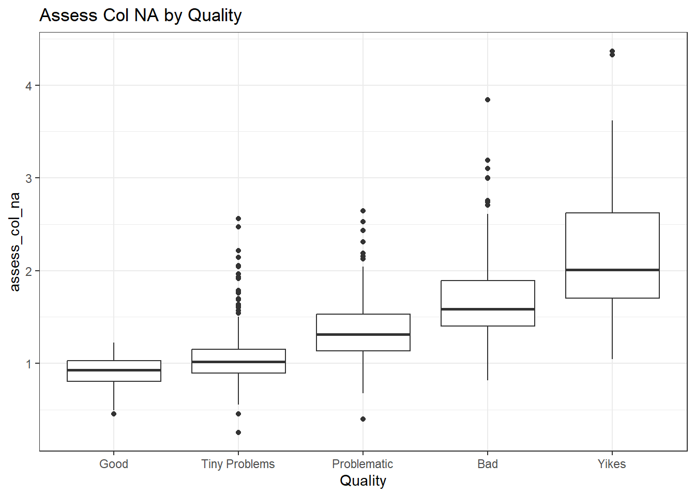
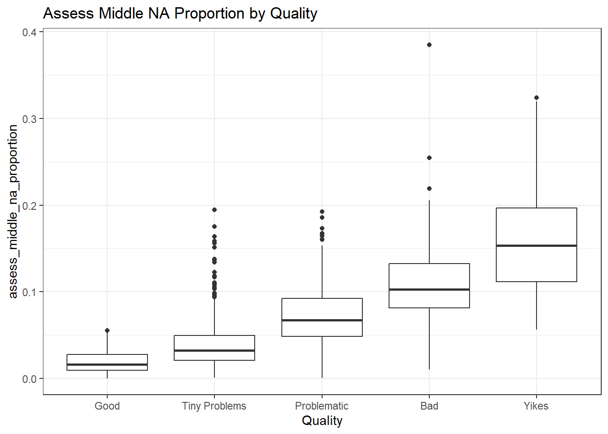
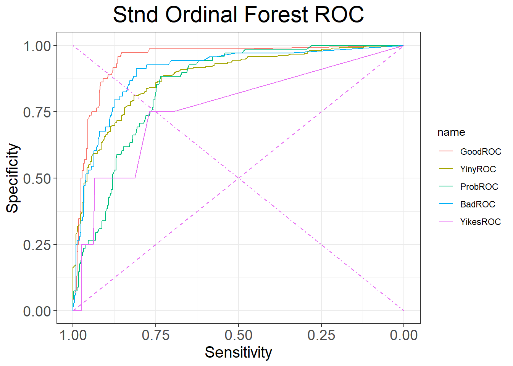

full.data <- read.csv2("../data/std_and_cropped_data_12_20_2022.csv", sep=",")
full.data <- full.data %>% mutate(
Quality = factor(Quality, levels = c("Good", "Tiny Problems", "Problematic", "Bad", "Yikes"), ordered = TRUE),
Problem = factor(Problem, levels = c("Good", "Damage", "Holes", "Feathering", "Rotation-Staging"), ordered = FALSE),
# This is the features ran against the full image
assess_percentile_na_proportion = as.numeric(assess_percentile_na_proportion),
assess_col_na = as.numeric(assess_col_na),
extract_na = as.numeric(extract_na),
assess_middle_na_proportion = as.numeric(assess_middle_na_proportion),
assess_rotation = as.numeric(assess_rotation),
assess_bottomempty = as.numeric(assess_bottomempty),
assess_median_na_proportion = as.numeric(assess_median_na_proportion),
# This is the features ran against the cropped image
assess_percentile_na_proportion_cropped = as.numeric(assess_percentile_na_proportion_cropped),
assess_col_na_cropped = as.numeric(assess_col_na_cropped),
extract_na_cropped = as.numeric(extract_na_cropped),
assess_bottomempty_cropped = as.numeric(assess_bottomempty_cropped),
assess_median_na_proportion_cropped = as.numeric(assess_median_na_proportion_cropped)
)
followupScans <- data.frame()Scan Quality Assessor: Model Comparison
Introduction
This document will give well commented exact technical details to show the comparison of various models we tested and compared to determine the best candidate for use in a production environment.
XXX overview of which models were ran, metrics of comparison, make a cool table with the results
Data handling and type setting
Feature Analysis
In this investigation, we are going to look at the features calculated against the full image. This investigation will tell us more about the predictive power of each feature, and tell us how different the quality categories are from each other.
standard.data <- full.data[,1:12]
table(standard.data[,4:5]) Problem
Quality Good Damage Holes Feathering Rotation-Staging
Good 253 0 0 0 0
Tiny Problems 0 1 991 61 6
Problematic 0 3 10 235 15
Bad 0 64 0 179 10
Yikes 0 1 1 18 2Assess Percentile NA Proportion
summary(standard.data$assess_percentile_na_proportion) Min. 1st Qu. Median Mean 3rd Qu. Max.
0.00000 0.00331 0.01088 0.02073 0.02716 0.25525 ggplot(standard.data, aes(x=Quality, y=assess_percentile_na_proportion)) +
geom_boxplot() +
ggtitle("Assess Percentile NA Proportion by Quality")
summary(glm(Quality ~ assess_percentile_na_proportion,
data=standard.data, family="binomial"))Warning: glm.fit: fitted probabilities numerically 0 or 1 occurred
Call:
glm(formula = Quality ~ assess_percentile_na_proportion, family = "binomial",
data = standard.data)
Deviance Residuals:
Min 1Q Median 3Q Max
-4.0868 0.0000 0.0104 0.2550 1.4413
Coefficients:
Estimate Std. Error z value Pr(>|z|)
(Intercept) -0.6017 0.1206 -4.991 6.02e-07 ***
assess_percentile_na_proportion 585.1354 45.1784 12.952 < 2e-16 ***
---
Signif. codes: 0 '***' 0.001 '**' 0.01 '*' 0.05 '.' 0.1 ' ' 1
(Dispersion parameter for binomial family taken to be 1)
Null deviance: 1476.42 on 1849 degrees of freedom
Residual deviance: 782.01 on 1848 degrees of freedom
AIC: 786.01
Number of Fisher Scoring iterations: 10In the boxplot we can see that as Assess Percentile NA Proportion increases, the quality of the image decreases. The IQR of the quality categories has overlap, but the medians are consistently different in the chart. The logistic regression also shows that there is overwhelming evidence, with reservation, for this being a useful feature in explaining the quality.
Assess Col NA
summary(standard.data$assess_col_na) Min. 1st Qu. Median Mean 3rd Qu. Max.
0.2573 0.9244 1.0755 1.1654 1.2928 4.3684 ggplot(standard.data, aes(x=Quality, y=assess_col_na)) +
geom_boxplot() +
ggtitle("Assess Col NA by Quality")
summary(glm(Quality ~ assess_col_na,
data=standard.data, family="binomial"))
Call:
glm(formula = Quality ~ assess_col_na, family = "binomial", data = standard.data)
Deviance Residuals:
Min 1Q Median 3Q Max
-2.3488 0.1629 0.4009 0.5954 1.8298
Coefficients:
Estimate Std. Error z value Pr(>|z|)
(Intercept) -2.5752 0.3593 -7.167 7.66e-13 ***
assess_col_na 4.3089 0.3727 11.563 < 2e-16 ***
---
Signif. codes: 0 '***' 0.001 '**' 0.01 '*' 0.05 '.' 0.1 ' ' 1
(Dispersion parameter for binomial family taken to be 1)
Null deviance: 1476.4 on 1849 degrees of freedom
Residual deviance: 1269.5 on 1848 degrees of freedom
AIC: 1273.5
Number of Fisher Scoring iterations: 6In the boxplot we can see that as Assess Col NA increases, the quality of the image decreases. The IQR of the quality categories has overlap, but the medians are consistently different in the chart, with the exception of “Good” and “Tiny Problems” which are very similar. The logistic regression also shows that there is overwhelming evidence for this being a useful feature in explaining the quality.
Extract NA
summary(standard.data$extract_na) Min. 1st Qu. Median Mean 3rd Qu. Max.
3.667 12.797 15.082 15.915 18.303 48.454 ggplot(standard.data, aes(x=Quality, y=extract_na)) +
geom_boxplot() +
ggtitle("Extract NA by Quality")summary(glm(Quality ~ extract_na,
data=standard.data, family="binomial"))
Call:
glm(formula = Quality ~ extract_na, family = "binomial", data = standard.data)
Deviance Residuals:
Min 1Q Median 3Q Max
-2.6889 0.1483 0.3688 0.5775 1.9821
Coefficients:
Estimate Std. Error z value Pr(>|z|)
(Intercept) -3.09877 0.36353 -8.524 <2e-16 ***
extract_na 0.35060 0.02753 12.736 <2e-16 ***
---
Signif. codes: 0 '***' 0.001 '**' 0.01 '*' 0.05 '.' 0.1 ' ' 1
(Dispersion parameter for binomial family taken to be 1)
Null deviance: 1476.4 on 1849 degrees of freedom
Residual deviance: 1226.7 on 1848 degrees of freedom
AIC: 1230.7
Number of Fisher Scoring iterations: 6In the boxplot we can see that as Extract NA increases, the quality of the image decreases. The IQR of the quality categories has overlap, but the medians are consistently different in the chart. The logistic regression also shows that there is overwhelming evidence for this being a useful feature in explaining the quality.
Assess Middle NA Proportion
summary(standard.data$assess_middle_na_proportion) Min. 1st Qu. Median Mean 3rd Qu. Max.
0.0002776 0.0221251 0.0392280 0.0517308 0.0688228 0.3851669 ggplot(standard.data, aes(x=Quality, y=assess_middle_na_proportion)) +
geom_boxplot() +
ggtitle("Assess Middle NA Proportion by Quality")
summary(glm(Quality ~ assess_middle_na_proportion,
data=standard.data, family="binomial"))
Call:
glm(formula = Quality ~ assess_middle_na_proportion, family = "binomial",
data = standard.data)
Deviance Residuals:
Min 1Q Median 3Q Max
-2.72629 0.03616 0.24091 0.58568 1.34175
Coefficients:
Estimate Std. Error z value Pr(>|z|)
(Intercept) -0.4164 0.1454 -2.864 0.00419 **
assess_middle_na_proportion 73.9873 5.7409 12.888 < 2e-16 ***
---
Signif. codes: 0 '***' 0.001 '**' 0.01 '*' 0.05 '.' 0.1 ' ' 1
(Dispersion parameter for binomial family taken to be 1)
Null deviance: 1476.4 on 1849 degrees of freedom
Residual deviance: 1115.6 on 1848 degrees of freedom
AIC: 1119.6
Number of Fisher Scoring iterations: 7In the boxplot we can see that as Extract NA increases, the quality of the image decreases. The IQR of the quality categories has overlap, but the medians are consistently different in the chart. The logistic regression also shows that there is overwhelming evidence for this being a useful feature in explaining the quality.
Assess Rotation
summary(standard.data$assess_rotation) Min. 1st Qu. Median Mean 3rd Qu. Max.
0.0000 0.3143 0.6904 1.0279 1.4601 4.9878 ggplot(standard.data, aes(x=Quality, y=assess_rotation)) +
geom_boxplot() +
ggtitle("Assess Rotation by Quality")
summary(glm(Quality ~ assess_rotation,
data=standard.data, family="binomial"))
Call:
glm(formula = Quality ~ assess_rotation, family = "binomial",
data = standard.data)
Deviance Residuals:
Min 1Q Median 3Q Max
-2.0678 0.5270 0.5443 0.5507 0.5555
Coefficients:
Estimate Std. Error z value Pr(>|z|)
(Intercept) 1.79066 0.09775 18.319 <2e-16 ***
assess_rotation 0.05131 0.07105 0.722 0.47
---
Signif. codes: 0 '***' 0.001 '**' 0.01 '*' 0.05 '.' 0.1 ' ' 1
(Dispersion parameter for binomial family taken to be 1)
Null deviance: 1476.4 on 1849 degrees of freedom
Residual deviance: 1475.9 on 1848 degrees of freedom
AIC: 1479.9
Number of Fisher Scoring iterations: 4In the boxplot, we see that there is no significant visual difference in median or IQR of Assess Rotation when grouped by Quality. The logistic regression shows no evidence that this feature can help explain the quality of an image.
Assess Bottomempty
summary(standard.data$assess_bottomempty) Min. 1st Qu. Median Mean 3rd Qu. Max.
8.516 22.669 27.540 29.903 34.634 95.394 ggplot(standard.data, aes(x=Quality, y=assess_bottomempty)) +
geom_boxplot() +
ggtitle("Assess Bottomempty by Quality")summary(glm(Quality ~ assess_bottomempty,
data=standard.data, family="binomial"))
Call:
glm(formula = Quality ~ assess_bottomempty, family = "binomial",
data = standard.data)
Deviance Residuals:
Min 1Q Median 3Q Max
-2.4871 0.2807 0.4750 0.6070 1.0997
Coefficients:
Estimate Std. Error z value Pr(>|z|)
(Intercept) -0.577479 0.258462 -2.234 0.0255 *
assess_bottomempty 0.089585 0.009999 8.960 <2e-16 ***
---
Signif. codes: 0 '***' 0.001 '**' 0.01 '*' 0.05 '.' 0.1 ' ' 1
(Dispersion parameter for binomial family taken to be 1)
Null deviance: 1476.4 on 1849 degrees of freedom
Residual deviance: 1368.4 on 1848 degrees of freedom
AIC: 1372.4
Number of Fisher Scoring iterations: 5In the boxplot we can see that as Assess Bottomempty increases, the quality of the image decreases. The IQR of the quality categories has overlap, but the medians are consistently different in the chart. There is an observation of note that the Yikes category has a particularly large IQR. The logistic regression also shows that there is overwhelming evidence for this being a useful feature in explaining the quality.
Assess Median NA Proportion
summary(standard.data$assess_median_na_proportion) Min. 1st Qu. Median Mean 3rd Qu. Max.
0.00000 0.00331 0.01088 0.02073 0.02716 0.25525 ggplot(standard.data, aes(x=Quality, y=assess_median_na_proportion)) +
geom_boxplot() +
ggtitle("Assess Median NA Proportion by Quality")
summary(glm(Quality ~ assess_median_na_proportion,
data=standard.data, family="binomial"))Warning: glm.fit: fitted probabilities numerically 0 or 1 occurred
Call:
glm(formula = Quality ~ assess_median_na_proportion, family = "binomial",
data = standard.data)
Deviance Residuals:
Min 1Q Median 3Q Max
-4.0868 0.0000 0.0104 0.2550 1.4413
Coefficients:
Estimate Std. Error z value Pr(>|z|)
(Intercept) -0.6017 0.1206 -4.991 6.02e-07 ***
assess_median_na_proportion 585.1354 45.1784 12.952 < 2e-16 ***
---
Signif. codes: 0 '***' 0.001 '**' 0.01 '*' 0.05 '.' 0.1 ' ' 1
(Dispersion parameter for binomial family taken to be 1)
Null deviance: 1476.42 on 1849 degrees of freedom
Residual deviance: 782.01 on 1848 degrees of freedom
AIC: 786.01
Number of Fisher Scoring iterations: 10In the boxplot we can see that as Assess Median NA Proportion increases, the quality of the image decreases. The IQR of the quality categories has overlap, but the medians are consistently different in the chart. The “Bad” and “Yikes” categories have very similar IQR and Medians. The logistic regression also shows that there is overwhelming evidence, with reservation, for this being a useful feature in explaining the quality.
Cross Correlations
XXX include https://heike.github.io/ggpcp/ and a scatterplot of the data
correlations <- cor(standard.data[,6:12])
corrplot(correlations, method = "shade")
There is significant correlation between most of the variables except assess rotation.
Model Analysis
Categorical Predictions:
For the purposes of this analysis, consider that the scanner using this model to decide if a scan needs to be re-done will be instructed that Good and Tiny Problems predictions likely don’t need to be re-done. However, Problematic, Bad, and Yikes scans have a high likelihood of needing to be redone.
Quantitative Predictions:
--cutoff is....full.data = full.data %>% mutate(
GoodScan = Quality %in% c("Good", "Tiny Problems") %>% factor()
)
sample <- sample(c(TRUE, FALSE), nrow(standard.data), replace=TRUE, prob=c(0.75,0.25))
train <- standard.data[sample, ]
test <- standard.data[!sample, ]
train$followup <- FALSE
train$num.Quality <- 0
train$num.Quality[train$Quality == "Good"] <- 1
train$num.Quality[train$Quality == "Tiny Problems"] <- 1
train$num.Quality <- factor(train$num.Quality, levels = c(0, 1))
test$followup <- FALSE
test$num.Quality <- 0
test$num.Quality[test$Quality == "Good"] <- 1
test$num.Quality[test$Quality == "Tiny Problems"] <- 1
test$num.Quality <- factor(test$num.Quality, levels = c(0, 1))
print("Original")[1] "Original"table(standard.data[,4:5]) Problem
Quality Good Damage Holes Feathering Rotation-Staging
Good 253 0 0 0 0
Tiny Problems 0 1 991 61 6
Problematic 0 3 10 235 15
Bad 0 64 0 179 10
Yikes 0 1 1 18 2print("Train")[1] "Train"table(train[,4:5]) Problem
Quality Good Damage Holes Feathering Rotation-Staging
Good 194 0 0 0 0
Tiny Problems 0 1 762 45 6
Problematic 0 3 9 175 11
Bad 0 47 0 140 6
Yikes 0 1 1 13 2print("Test")[1] "Test"table(test[,4:5]) Problem
Quality Good Damage Holes Feathering Rotation-Staging
Good 59 0 0 0 0
Tiny Problems 0 0 229 16 0
Problematic 0 0 1 60 4
Bad 0 17 0 39 4
Yikes 0 0 0 5 0print("Train Numeric")[1] "Train Numeric"table(train$num.Quality)
0 1
408 1008 print("Train Numeric")[1] "Train Numeric"table(train$num.Quality, train$Problem)
Good Damage Holes Feathering Rotation-Staging
0 0 51 10 328 19
1 194 1 762 45 6print("Test Numeric")[1] "Test Numeric"table(test$num.Quality)
0 1
130 304 print("Test Numeric")[1] "Test Numeric"table(test$num.Quality, test$Problem)
Good Damage Holes Feathering Rotation-Staging
0 0 17 1 104 8
1 59 0 229 16 0Ordinal Logistic Regression
ord.Model <- polr(Quality ~ assess_percentile_na_proportion + assess_col_na +
assess_middle_na_proportion + assess_bottomempty,
data=train, method="logistic")
summary(ord.Model)
Re-fitting to get HessianCall:
polr(formula = Quality ~ assess_percentile_na_proportion + assess_col_na +
assess_middle_na_proportion + assess_bottomempty, data = train,
method = "logistic")
Coefficients:
Value Std. Error t value
assess_percentile_na_proportion 29.5200 6.47093 4.562
assess_col_na 1.4603 0.38065 3.836
assess_middle_na_proportion 54.3102 7.41436 7.325
assess_bottomempty -0.1031 0.01885 -5.470
Intercepts:
Value Std. Error t value
Good|Tiny Problems -0.9573 0.3926 -2.4382
Tiny Problems|Problematic 3.1774 0.4003 7.9384
Problematic|Bad 5.0938 0.4282 11.8949
Bad|Yikes 11.5958 0.7083 16.3705
Residual Deviance: 2270.671
AIC: 2286.671 test$Predictions <- predict(ord.Model, test)
# True values on the top, Predictions on the left
table(test$Predictions, test$Quality)
Good Tiny Problems Problematic Bad Yikes
Good 0 0 0 0 0
Tiny Problems 59 237 29 18 0
Problematic 0 6 19 12 0
Bad 0 1 16 26 5
Yikes 0 1 1 4 0The model did not predict a single Good scan in all 459 scans of the test data. It did however, keep all of the Good scans in the Tiny Problems category. The model got 254/257 tiny problems accurately predicted, with one concern that a Tiny Problems scan got labelled as Yikes. So what should have been an acceptable scan got labelled as completely terrible. The Problematic category has some significant spread, concerningly, 59% of the Problematic scans, which is out cutoff of non-acceptability got labelled as Tiny Problems. The Problematic category is consistently incorrectly labelled as better than it is. The Bad category is correctly labelled 55% of the time, and is consistently labelled in the non-acceptable category, with only 9 out of 51 scans being placed wrong. The Yikes category was consistently labelled as bad or yikes, and therefore is entirely in the non-acceptable category, which is what we are looking for.
Numerical regression
- (Good/Tiny = 1, Problematic/Bad/Yikes = 0)
num.logit.model <- glm(num.Quality ~ assess_percentile_na_proportion + assess_col_na +
assess_middle_na_proportion + assess_bottomempty,
data=train, family="binomial")
summary(num.logit.model)
Call:
glm(formula = num.Quality ~ assess_percentile_na_proportion +
assess_col_na + assess_middle_na_proportion + assess_bottomempty,
family = "binomial", data = train)
Deviance Residuals:
Min 1Q Median 3Q Max
-2.7869 -0.0936 0.2900 0.4556 3.8341
Coefficients:
Estimate Std. Error z value Pr(>|z|)
(Intercept) 4.22883 0.63167 6.695 2.16e-11 ***
assess_percentile_na_proportion -46.38063 10.39591 -4.461 8.14e-06 ***
assess_col_na -2.18336 0.58658 -3.722 0.000197 ***
assess_middle_na_proportion -41.81036 11.39867 -3.668 0.000244 ***
assess_bottomempty 0.08400 0.02815 2.984 0.002843 **
---
Signif. codes: 0 '***' 0.001 '**' 0.01 '*' 0.05 '.' 0.1 ' ' 1
(Dispersion parameter for binomial family taken to be 1)
Null deviance: 1700.54 on 1415 degrees of freedom
Residual deviance: 866.29 on 1411 degrees of freedom
AIC: 876.29
Number of Fisher Scoring iterations: 6test$num.predictions <- predict(num.logit.model, test, type="response")
ggplot(test, aes(x=num.Quality, y=num.predictions)) +
geom_boxplot() +
xlab("True Quality") +
ylab("Probability of good scan") +
ggtitle("Numerical Logistic Prediction Test Data")
full.data <- full.data %>%
mutate(followup=GoodScan=="TRUE" & assess_bottomempty_cropped>30)
full.data %>%
ggplot(aes(x = assess_bottomempty_cropped, y = GoodScan, color = followup)) +
geom_jitter() +
scale_colour_manual(values=c("grey50", "darkorange"))
Ordinal/categorical random forest
Metrics -McNemars -kappas -various agreement outputs and stuff.
ord.forest.model <- randomForest(Quality ~ assess_percentile_na_proportion + assess_col_na +
assess_middle_na_proportion + assess_bottomempty, data = train,
importance = TRUE)
test$Prediction <- predict(ord.forest.model, test)
print("Test data")[1] "Test data"table(test$Quality, test$Prediction)
Good Tiny Problems Problematic Bad Yikes
Good 39 20 0 0 0
Tiny Problems 15 214 12 4 0
Problematic 1 21 23 20 0
Bad 1 11 14 33 1
Yikes 0 0 0 5 0Numerical Random Forest
- (Good/Tiny = 1, Problematic/Bad/Yikes = 0)
- (Good = 1, Yikes = 0, drop others)
num.RF.model <- randomForest(num.Quality ~ assess_percentile_na_proportion + assess_col_na +
assess_middle_na_proportion + assess_bottomempty, data = train,
importance = TRUE)
test$num.predictions <- predict(num.RF.model, test, type = 'prob')[,2]
ggplot(test, aes(x=num.Quality, y=num.predictions)) +
geom_boxplot() +
xlab("True Quality") +
ylab("Probability of good scan") +
ggtitle("Numerical Random Forest Prediction Test Data")
Cropped Feature Analysis
Extract NA Cropped
Which of the features is better for discriminating between good and bad scans?
Warning: Returning more (or less) than 1 row per `summarise()` group was deprecated in
dplyr 1.1.0.
ℹ Please use `reframe()` instead.
ℹ When switching from `summarise()` to `reframe()`, remember that `reframe()`
always returns an ungrouped data frame and adjust accordingly.
ℹ The deprecated feature was likely used in the yardstick package.
Please report the issue at <https://github.com/tidymodels/yardstick/issues>.


[1] "Extract NA. Correlation: 0.908 Full AUC: 0.871 Cropped AUC: 0.902"| min | firstQ | med | mean | thirdQ | max | |
|---|---|---|---|---|---|---|
| Standard | 3.666645 | 12.79727 | 15.082281 | 15.915471 | 18.30296 | 48.45372 |
| Cropped | 1.389464 | 6.38338 | 8.060005 | 8.916349 | 10.57698 | 40.80471 |
Should we use features from just one type of scan or both?
Call:
glm(formula = GoodScan ~ extract_na + extract_na_cropped, family = binomial(),
data = full.data)
Deviance Residuals:
Min 1Q Median 3Q Max
-3.1882 -0.2394 0.3044 0.5298 4.0795
Coefficients:
Estimate Std. Error z value Pr(>|z|)
(Intercept) 7.16247 0.37858 18.919 <2e-16 ***
extract_na -0.04349 0.03613 -1.204 0.229
extract_na_cropped -0.58303 0.05020 -11.615 <2e-16 ***
---
Signif. codes: 0 '***' 0.001 '**' 0.01 '*' 0.05 '.' 0.1 ' ' 1
(Dispersion parameter for binomial family taken to be 1)
Null deviance: 2230.6 on 1849 degrees of freedom
Residual deviance: 1299.2 on 1847 degrees of freedom
AIC: 1305.2
Number of Fisher Scoring iterations: 6
Conclusion for Extract NA
The values for feature extract_NA are highly correlated between the cropped and the full scan.
Using good and scans with only tiny problems as overall ‘good’ scans, the feature applied to cropped scans has an increased accuracy compared to the feature values from the full scan.
We might want to follow up on the orange colored scans:

full.data$LAPD_id[full.data$followup]NULLfollowupScans <- rbind(followupScans, full.data[full.data$followup == TRUE,])
# All followups for extract_na are mislabelled scans. They are all labelled as tiny problems but should be problematic or worse.Assess Bottomempty Cropped
Which of the features is better for discriminating between good and bad scans?
Warning: Returning more (or less) than 1 row per `summarise()` group was deprecated in
dplyr 1.1.0.
ℹ Please use `reframe()` instead.
ℹ When switching from `summarise()` to `reframe()`, remember that `reframe()`
always returns an ungrouped data frame and adjust accordingly.
ℹ The deprecated feature was likely used in the yardstick package.
Please report the issue at <https://github.com/tidymodels/yardstick/issues>.


[1] "Assess Bottomempty. Correlation: 0.905 Full AUC: 0.783 Cropped AUC: 0.859"| min | firstQ | med | mean | thirdQ | max | |
|---|---|---|---|---|---|---|
| Standard | 8.516493 | 22.66947 | 27.54019 | 29.90259 | 34.63373 | 95.39375 |
| Cropped | 3.564558 | 10.78581 | 13.54205 | 15.28335 | 17.71191 | 84.22476 |
Should we use features from just one type of scan or both?
Call:
glm(formula = GoodScan ~ assess_bottomempty + assess_bottomempty_cropped,
family = binomial(), data = full.data)
Deviance Residuals:
Min 1Q Median 3Q Max
-2.6794 -0.2813 0.4084 0.6028 4.0680
Coefficients:
Estimate Std. Error z value Pr(>|z|)
(Intercept) 4.57647 0.25156 18.193 < 2e-16 ***
assess_bottomempty 0.09046 0.01460 6.194 5.86e-10 ***
assess_bottomempty_cropped -0.40779 0.02738 -14.895 < 2e-16 ***
---
Signif. codes: 0 '***' 0.001 '**' 0.01 '*' 0.05 '.' 0.1 ' ' 1
(Dispersion parameter for binomial family taken to be 1)
Null deviance: 2230.6 on 1849 degrees of freedom
Residual deviance: 1503.7 on 1847 degrees of freedom
AIC: 1509.7
Number of Fisher Scoring iterations: 5
Conclusion for Assess Bottomempty
The values for feature assess_bottomempty are highly correlated between the cropped and the full scan.
Using good and scans with only tiny problems as overall ‘good’ scans, the feature applied to cropped scans has an increased accuracy compared to the feature values from the full scan.
We might want to follow up on the orange colored scans:

full.data$LAPD_id[full.data$followup]NULLfollowupScans <- rbind(followupScans, full.data[full.data$followup == TRUE,])Assess Col NA Cropped
Which of the features is better for discriminating between good and bad scans?


[1] "Assess Col NA Correlation: 0.919 Full AUC: 0.888 Cropped AUC: 0.896"| min | firstQ | med | mean | thirdQ | max | |
|---|---|---|---|---|---|---|
| Standard | 0.2573318 | 0.9244176 | 1.0755102 | 1.1654392 | 1.292844 | 4.368436 |
| Cropped | 0.0920783 | 0.4700281 | 0.6126759 | 0.6851693 | 0.807577 | 3.356120 |
Should we use features from just one type of scan or both?
Call:
glm(formula = GoodScan ~ assess_col_na + assess_col_na_cropped,
family = binomial(), data = full.data)
Deviance Residuals:
Min 1Q Median 3Q Max
-3.2254 -0.1897 0.3176 0.5365 3.6049
Coefficients:
Estimate Std. Error z value Pr(>|z|)
(Intercept) 7.3581 0.3785 19.440 < 2e-16 ***
assess_col_na -2.4724 0.5155 -4.796 1.62e-06 ***
assess_col_na_cropped -4.8233 0.6249 -7.719 1.17e-14 ***
---
Signif. codes: 0 '***' 0.001 '**' 0.01 '*' 0.05 '.' 0.1 ' ' 1
(Dispersion parameter for binomial family taken to be 1)
Null deviance: 2230.6 on 1849 degrees of freedom
Residual deviance: 1308.8 on 1847 degrees of freedom
AIC: 1314.8
Number of Fisher Scoring iterations: 6
Conclusion for Assess Col NA
The values for feature assess_col_na are highly correlated between the cropped and the full scan.
Using good and scans with only tiny problems as overall ‘good’ scans, the feature applied to cropped scans has an increased accuracy compared to the feature values from the full scan.
We might want to follow up on the orange colored scans:

full.data$LAPD_id[full.data$followup]NULLfollowupScans <- rbind(followupScans, full.data[full.data$followup == TRUE,])Assess Median NA Proportion Cropped
Which of the features is better for discriminating between good and bad scans?


[1] "Assess Median NA Proportion. Correlation: 0.908 Full AUC: 0.907 Cropped AUC: 0.863"| min | firstQ | med | mean | thirdQ | max | |
|---|---|---|---|---|---|---|
| Standard | 0.0000000 | 0.0033099 | 0.0108771 | 0.0207348 | 0.0271577 | 0.2552491 |
| Cropped | 0.0011692 | 0.0518201 | 0.0686747 | 0.0751096 | 0.0918769 | 0.2994505 |
Should we use features from just one type of scan or both?
Call:
glm(formula = GoodScan ~ assess_median_na_proportion + assess_median_na_proportion_cropped,
family = binomial(), data = full.data)
Deviance Residuals:
Min 1Q Median 3Q Max
-2.8226 -0.1079 0.3143 0.4865 5.2612
Coefficients:
Estimate Std. Error z value Pr(>|z|)
(Intercept) 4.384 0.257 17.060 < 2e-16 ***
assess_median_na_proportion -83.035 5.925 -14.014 < 2e-16 ***
assess_median_na_proportion_cropped -21.546 3.491 -6.171 6.77e-10 ***
---
Signif. codes: 0 '***' 0.001 '**' 0.01 '*' 0.05 '.' 0.1 ' ' 1
(Dispersion parameter for binomial family taken to be 1)
Null deviance: 2230.6 on 1849 degrees of freedom
Residual deviance: 1219.0 on 1847 degrees of freedom
AIC: 1225
Number of Fisher Scoring iterations: 6
Conclusion for Assess Median NA Proportion
The values for feature extract_NA are highly correlated between the cropped and the full scan.
Using good and scans with only tiny problems as overall ‘good’ scans, the feature applied to full scans has an increased accuracy compared to the feature values from the cropped scan.
We might want to follow up on the orange colored scans:

full.data$LAPD_id[full.data$followup]NULLfollowupScans <- rbind(followupScans, full.data[full.data$followup == TRUE,])Followup Scans
XXX todo: add standard analysis and predicted outliers